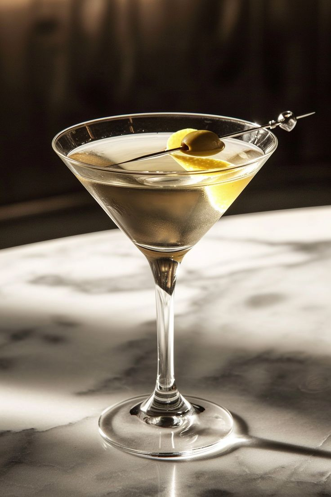

Martini
Ingredients
- 2 1/2 oz gin (or vodka)
- 1/2 oz dry vermouth
- Ice
- Olive or lemon twist for garnish
- For a dirty martini, add 1/2 oz olive brine
Instructions
- Fill a mixing glass with ice.
- Add gin (or vodka) and dry vermouth (and olive brine for a dirty martini).
- Stir well until chilled.
- Strain into a chilled martini glass.
- Garnish with an olive or lemon twist.
Variations
- Dry Martini: Use less vermouth for a drier flavor profile.
- Sweet Martini: Substitute dry vermouth with sweet vermouth.
- Vesper Martini: Mix gin, vodka, and Lillet Blanc for a James Bond-inspired variation.
History
The Martini is believed to have originated in the mid-to-late 19th century, with several theories about its creation. One popular story attributes it to bartender Jerry Thomas, who included a recipe in his 1887 cocktail book. The Martini became a symbol of sophistication and elegance in the 20th century, especially during Prohibition and the post-World War II era.
The Dirty Martini is a variation that emerged in the late 20th century. It gained popularity in the 1990s, although its exact origin is unclear. The Dirty Martini became a staple in bars and is often favored by those who enjoy a saltier twist on the classic cocktail.